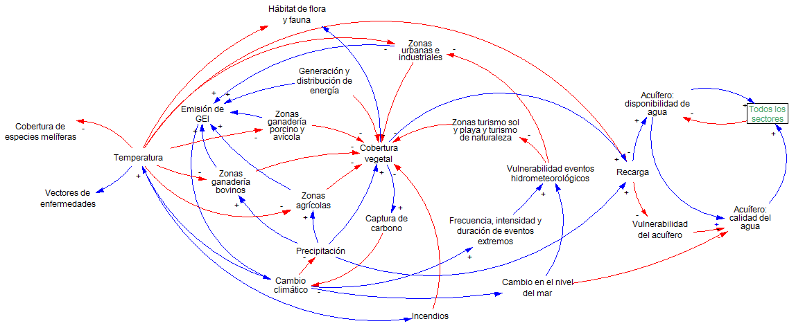
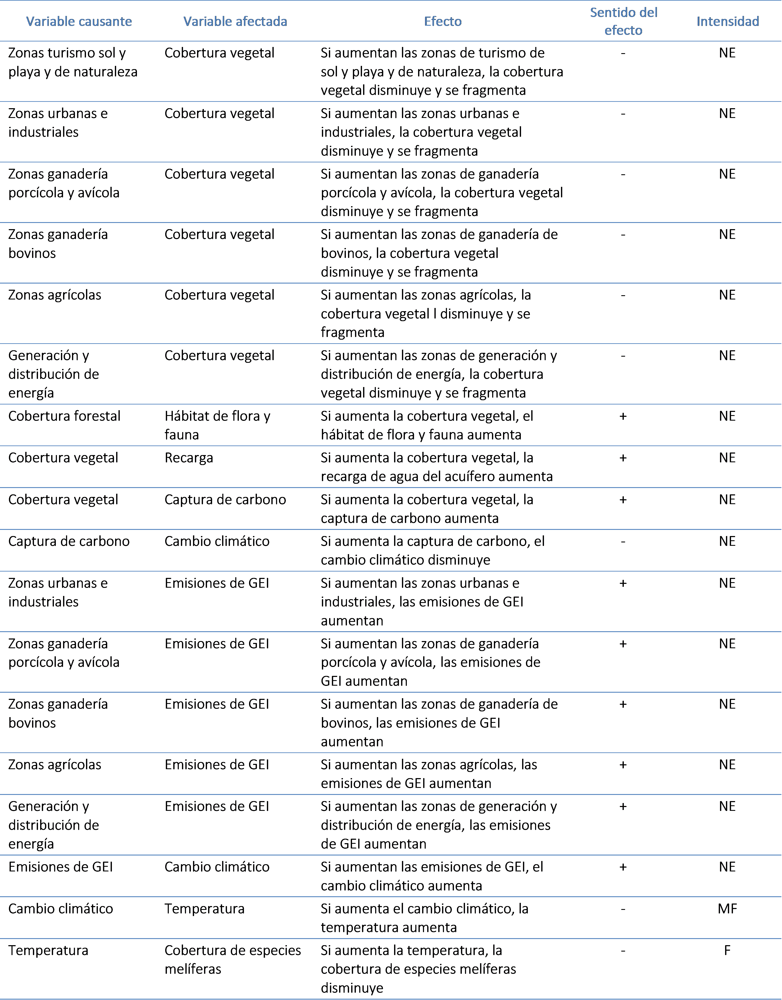
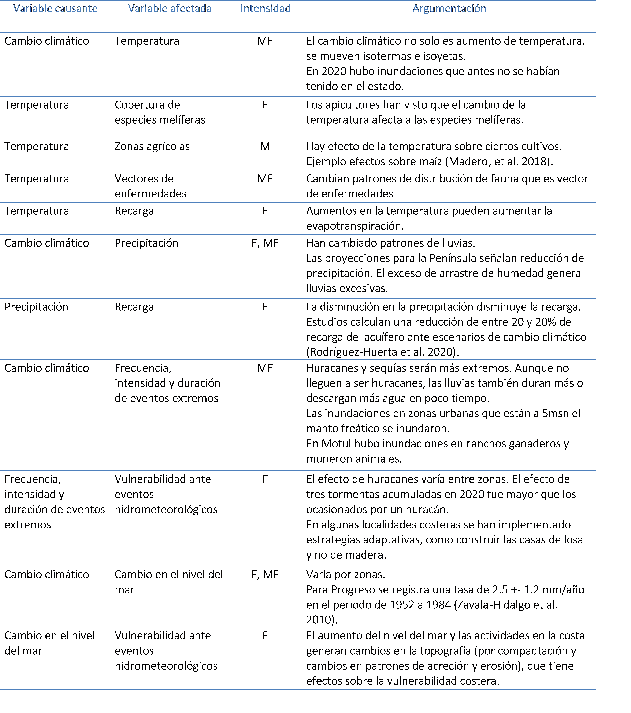

Cambio climático¶
Diagrama que representa los efectos del cambio climático¶

Variables del diagrama que representa los efectos del cambio climático¶
| Variable | Definición | Unidades |
|---|---|---|
| Acuífero: calidad del agua | Índice | Adimensional |
| Acuífero: disponibilidad de agua | Disponibilidad Media Anual de Agua Subterránea | Hectómetros cúbicos |
| Cobertura vegetal | Superficie con cobertura vegetal natural | Hectáreas |
| Generación y distribución de energía | Superficie de instalaciones de energía eólica, solar y termoeléctricas | Hectáreas |
| Hábitat de flora y fauna | Superficie total del hábitat interior de parches de vegetación natural | Hectáreas |
| Vulnerabilidad ante eventos hidrometeorológicos | Índice | Adimensional |
| Vulnerabilidad del acuífero | Superficie de acuífero con vulnerabilidad alta a la contaminación | Hectáreas |
| Zonas turismo sol y playa y turismo de naturaleza | Superficie con uso turístico de sol y playa y turismo de naturaleza | Hectáreas |
| Zonas urbanas e industriales | Superficie de zonas urbanas e industriales | Hectáreas |
| Todos los sectores | Superficie apta para todos los sectores | Hectáreas |
| Emisión de gases GEI | Emisiones de contaminantes atmosféricos | Toneladas al año |
| Temperatura | Temperatura promedio | Grados Celcius |
| Vectores de enfermedades | Índice | Adimensional |
| Cobertura de especies melíferas | Superficie de distribución de especies melíferas | Hectáreas |
| Zonas ganadería porcino y avícola | Superficie de zonas de uso pecuario porcino y avícola | Hectáreas |
| Zonas agrícolas | Superficie de zonas de uso agrícola | Hectáreas |
| Zonas ganadería bovinos | Superficie de zonas de uso pecuario bovino | Hectáreas |
| Frecuencia e intensidad de eventos extremos | Frecuencia, intensidad y duración de eventos hidrometeorológicos extremos (nortes, huracanes, lluvias, etc.) | Número, Categoría de tormentas y huracanes, Días |
| Cambio en el nivel del mar | Cambio en el nivel medio del mar | Milímetros al año |
| Precipitación | Patrones de precipitación | Milímetros cúbicos |
| Captura de carbono | Captura de carbono por cobertura forestal | Toneladas por hectárea |
| Incendios | Incidencia de incendios | Número de incendios, Superficie afectada |
Interacciones del diagrama que representa los efectos del cambio climático¶

Justificación de la evaluación de intensidad de las interacciones¶

*Mardero, S., Schmook, B., López-Martínez, J. O., Cicero, L., Radel, C., & Christman, Z. (2018). The uneven influence of climate trends and agricultural policies on maize production in the Yucatan Peninsu-la, Mexico. Land, 7(3), 80.
** Rodríguez-Huerta, E., Rosas-Casals, M., & Hernández-Terrones, L. M. (2020). A water balance model to estimate climate change impact on groundwater recharge in Yucatan Peninsula, Mexico. Hydrological Sciences Journal, 65(3), 470-486.
*** Zavala-Hidalgo, J., De Buen Kalman, R., Romero-Centeno, R., & Hernández-Maguey, F. (2010). Tendencias del nivel del mar en las costas mexicanas. Vulnerabilidad de las zonas costeras mexicanas ante el cambio climático, 249-268.